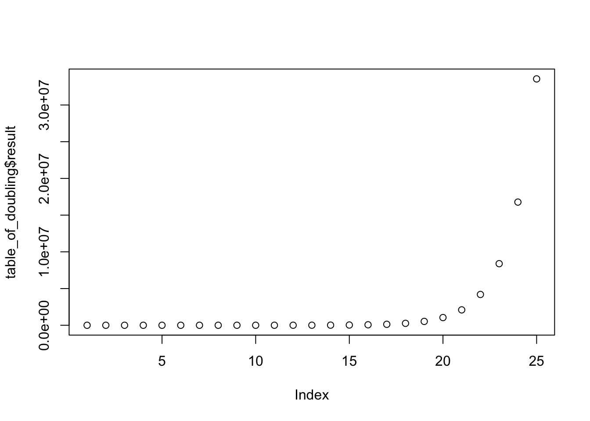

Chapter 1 Data
If you go back a few hundred years, what we take for granted today would seem like magic - being able to talk to people over long distances, to transmit images, flying, accessing vast amounts of data like an oracle. These are all things that would have been considered magic a few hundred years ago. —Elon Musk
The goal of this book is to develop practical skills for making sense of data. It is aimed at students who are not familiar with statistics, may be afraid of math (or not), and have little to no experience with using computers to ask and answer questions with data.
Before we begin, let me say a few things. First, why should you care about making sense of data? The real goal is to use data to ask and answer questions about the world around us. Making sense of data helps us ask and answer those questions.
Second, in simple arithmetic problems, like 1+1=?, there are right and wrong answers. In statistics, there are some arithmetic problems to solve, but there are no right answers, even when the arithmetic is done correctly. Instead there are different kinds of answers, some more useful than others. There are different philosophies about statistics, how to teach it, and how to do it. Statistics are like tools, they were built with a purpose in mind, but can be used in different ways. I can use a screwdriver to twist a screw, or to pop a balloon, but I don’t use a screwdriver as my pillow, because it isn’t a good pillow. Similarly, the same statistics can be used to solve different problems, and the same problem can be solved by using different statistics. What is most important is solving the problem, and justifying why your solution solves the problem.
We will be focusing on how to solve problems with making sense of data. Data are records of measurements about things around us in the world. Data could be the scores on midterm exams, the heights of people in France, or anything else that can be measured or counted. We are living in an age of data, where human’s have created more data than anyone can imagine.
1.1 More data than anyone can imagine
People have been producing data about the world around them for a long time. They have also been using data to ask and answer questions about the world around them for as long a time. With the invention of the computer, humans have been radically increasing the amount of data they are producing and storing, as well as radically increasing the ability to make sense of that data to answer all sorts of new and old questions.
How many books can an average person read in a lifetime? How could you estimate this? You would need to know the average lifespan of a person, the average reading speed (words per minute), and the average number of words in a book. You could find estimates for those numbers by searching the internet. Post your answers as an annotation using Hypothesis.
The capacity for storing data has already radically increased beyond anyone one person’s ability to imagine the scale of the situation. And the capacity continues to increase. For example, humans have already written more books than anyone can read in a lifetime. According to wikipedia, Google has digitized 25 million books as of 2015, and estimates that there are about 130 million total distinct books to digitize (they plan to digitize them all). According to Internet Live Stats there over 1.27 billion websites as of October 2017, they also have a counter that is going up and up every second. In 2010, the CEO of Google, Eric Schmidt said “Every two days now we create as much information as we did from the dawn of civilization up until 2003, according to Schmidt. That’s something like five exabytes of data”. In other words, more than anyone can imagine.
At the same time, our ability to process data using computers has been increasing to astounding levels. The first mechanical computers were big and slow, taking up entire rooms. Now, they are faster and faster and smaller and smaller. We carry them in our pockets. In 1965, Gordon Moore, co-founder of Intel (producer of circuits for computers), published a paper pointing out that the number of transitors that could be packed into an integrated circuit was doubling every two years. Roughly this means that the processing speed of computer systems was doubling every two years. Ever since 1965, this trend has continued. In recent years, the trend has slowed down a bit, with speed doubling every two and half years. That’s a lot of doubling.
The doubling of computer speed every two years is a great example of something that radically increases in an astounding fashion. To get an intuition for doubling, let’s look a sequence of numbers that doubles. We start with 2, then we double it (2x2=4), then we double that (2x4=8), then double that (2x8=16), and so on. What do those numbers look like if we keep doubling 25 times. Well, 2x16=32, 2x32=64, 2x64=128, 2x128=256, 2x256=…you know what, I’m tired of doing that in my head. And, I lost my calculator (I don’t even own a calculator). I could use the calculator app on my phone, but it’s not nearby, and I really don’t feel like tapping out the numbers. Call me lazy. Instead, I’ll force my computer to do the work for me. It’s much easier that way.
Below you will see two things. In the grey box is some computer code to compute the sequence using free software called R. Next is a table, with three columns. The first column shows the number (2) that we are doubling, the second column shows how many times we double the number, and the third column shows the resulting answer.
Over this course you will be learning how to use the free software R to analyze data. I will also be using R in this textbook to illustrate different concepts. I will usually present the R code I use, just like the code in the grey box. At this point you do not need to focus on the code, however it is there for your future reference.
library(knitr)
base_number<-rep(2,25)
exponent<-seq(1,25)
result<-base_number^exponent
table_of_doubling<-data.frame(base_number,exponent,result)
kable(table_of_doubling)| base_number | exponent | result |
|---|---|---|
| 2 | 1 | 2 |
| 2 | 2 | 4 |
| 2 | 3 | 8 |
| 2 | 4 | 16 |
| 2 | 5 | 32 |
| 2 | 6 | 64 |
| 2 | 7 | 128 |
| 2 | 8 | 256 |
| 2 | 9 | 512 |
| 2 | 10 | 1024 |
| 2 | 11 | 2048 |
| 2 | 12 | 4096 |
| 2 | 13 | 8192 |
| 2 | 14 | 16384 |
| 2 | 15 | 32768 |
| 2 | 16 | 65536 |
| 2 | 17 | 131072 |
| 2 | 18 | 262144 |
| 2 | 19 | 524288 |
| 2 | 20 | 1048576 |
| 2 | 21 | 2097152 |
| 2 | 22 | 4194304 |
| 2 | 23 | 8388608 |
| 2 | 24 | 16777216 |
| 2 | 25 | 33554432 |
You can see from the table that the result keeps getting bigger and bigger. In fact, each result is twice as big as the one before. This is called exponential growth. It can be useful to see what exponential growth looks like in a figure.
plot(table_of_doubling$result)
If the result of doubling leads to big increases each time, why do so many of the dots appear on the bottom of the figure, and only a few dots on the right look as if they are increasing?
Every new number is so big, by comparison most of the previous numbers are tiny, which is why only a few dots look as if they are going up.
Each dot shows how our number doubles at every step. It looks like the first several dots are very small numbers, almost like a flat line. However, the dots near the right end of the graph are shooting straight up into huge numbers.
What does all of this mean for computing power? It means as of today our computers already have a huge ability to process data with great speed, and that every couple of years that ability gets twice as huge. In other words, we can solve some problems now that we couldn’t solve two years ago, and in two years from now we will able to solve new problems that nobody has even thought of yet.
I brought up two facts about data for two reasons. The first fact was that humans are creating mountains of new data everyday, more than anyone can imagine. This is exciting because it means we have new opportunities to use that data to ask and answer questions about the world around us. The second fact was that computers are doubling in their processing speed roughly every two years. This is exciting because it means we can use computers to process data for us very quickly, which will allow us to ask and answer questions more easily, and without spending all of our time doing calculations. We can use our precious time to ask better questions, and get better answers.
1.2 Recipes versus Cooking: Or, the calculator controversy
If a student learns to add numbers only by using a calculator, have they really learned anything about adding? Perhaps they wouldn’t know how to add if they didn’t have a calculator. After all, adding on a caluculator is just pressing a bunch of buttons in the correct order, that’s not adding. If a student learns how to add numbers by using a pencil and paper, then they must really know how to add. Writing numbers and + signs down on paper is not at all the same as pressing buttons. Writing numbers down is the real deal. Sometimes teachers ban the use of calculators in math classes. There is no ban in this class, use them if you want. Instead, we use computers, they are much better calculators, and much faster than pencil and paper. In fact, once you tell a computer what to do, it can do so much more than adding, all with a click of a single button.
The calculator controversy points to issues that sometimes pop up in classrooms. Some teachers worry that if they give students a tool, like a calculator, that can easily solve a problem, like adding, then students may learn to use the tool (press buttons), but fail to learn the concepts behind the tool (adding). So, they ban the tool, and assume that students will have no choice but to learn the concept. The problem isn’t the tool, teaching and learning concepts always involves some kind of tool (pencil and paper are tools, math would be even harder without them). The problem is that teaching and learning concepts can be challenging.
Courses in statistics usually have a goal of teaching the concepts behind statistics. The idea is that if you understand the concepts, you can use them flexibly to solve different kinds of problems. Even more, if you understand how the concepts work, you could make new concepts and use those to solve problems. These are good ideals to aspire to. However, practical matters often get in the way of these ideals. For example, statistics often involve mathematical formulas, and exam questions often challenge students to compute the correct answer for a given math problem. Although this is a useful skill, it is a little bit like the calculator controversy. If you can provide a numerical answer to a math equation, do you understand what the equation means? Or, have you simply demonstrated that you can plug numbers into a formula, and then use your calulator to arrive at the correct answer. Similarly, there are numerous software packages for statistics that, like calculators, can compute desired statistics for a set of data with a few mouse clicks. Does learning how to click buttons in a computer program require that you understand the concepts behind the statistics you are performing?
A student who can plug numbers into formulas, and click buttons on a computer screen can probably pass most introductory statistics courses. This usually means those students didn’t learn much about statistics. For students who never have to use statistics again, this might not be too bad, why bother learning a skill that you’ll never use. However, it is not uncommon for researchers (who have to use statistics all the time) to find themselves in a similar position. They might know how to plug numbers into formulas, and how to click buttons in statistics software to analyze data, and they may even publish their findings without having a solid understanding of what they were doing to their data. This can happen for lots of reasons, including the fact that not everybody has enough time to get a Ph.D. in statistics before they do research. But, this is not an excuse. If you are going to work with data, you should think about what you are doing, and be able to describe why your methods of analysis make sense for the problem you are tring to solve.
In making these observations I have built up some tension between the goals of understanding concepts behind statistics, and using tools like formulas and software packages. By analogy, I point to similar tension between cooking and recipes. For example, a good cook doesn’t need to use recipes, they know the principles behind cooking, and use those principle to craft dishes. If the cook writes down a recipe in a clear, step-by-step format, then other people, who do not understand the principles behind the recipe, can also create the dish, just by following the step-by-step instructions. I think you would find many chefs who learned the principles behind cooking partly by studying and using recipes. So, learning the principles behind cooking and can go hand-in-hand with using recipes. The same goes for statistics. Learning the principles behind statistics goes hand-in-hand with using the wide variety of tools we have at our disposal to crunch numbers. In this course, we will use recipes for statistics to show how to cook with data.
The underlying metaphor to these observations is the difference between recipes and cooking. Recipes are step-by-step guides to making a dish. If the recipe is a clear one, and you follow all the steps, then you will make the final dish. Recipes are great for learning how to cook. Cooking is being able to make dishes without recipes.
1.3 Why should Psychologists learn to program?
The benefits of learning to program for Psychologists are numerous. Programming makes data-analysis more efficient, accurate, and transparent; and, opens new doors for new analyses that would not be practical or possible without programming. Experiments are often run on computers, so programming is important for designing, creating, and implementing experiments themselves. Programs can be written to formally express psychological theories, so programming can also help a researcher iron out and clearly express their own ideas about psychological processes.
Experiment builders
Computing technology plays an important role in psychological research, and there are many kinds of proprietary software developed specifically for psychologists. For example, experiments can be created using experiment builder programs such as E-prime, Presentation, and Superlab. Similarly, statistical analysis can be conducted using proprietary software like SPSS, SAS, JMP, and many others. These kinds of canned software packages can be very useful. They are generally user-friendly, require little programming knowledge, and tasks can be completed in relatively small amounts of time using click-and-drag interfaces. However, in many cases the code driving these programs is private (versus open-source where the code is public). So, it can be difficult and sometimes impossible to determine if the program is accomplishing a task that needs to be accomplished in a specific way. Not infrequently the program may simply be incapable of completing a particular kind of statistical analysis, or running a particular kind of experiment. At this point it becomes helpful (necessary) to learn programming so that solutions to unique research problems can be solved by the researcher directly.
Learning how to program experiments from scratch and how to analyze data using your own code allows control over every detail of design and analysis. This level of control is invaluable for creating flexible and customizable experimental designs, and for being confident that the intended design is actually being implemented (after all if you write the code, you can check that it works). Although we will not be learning to program with proprietary software packages, these packages often include their own scripting language, so learning general programming techniques will also allow you to exert more fine grained control over canned software packages.
Another merit worth mentioning is time-savings. Becoming fluent in programming enables researchers to rapidly implement their designs, making experiment building take days, afternoons, or sometimes even a half-hour or so. As well, many monotonous, tedious, and time-consuming aspects of data-analysis can be automatized with scripts, saving researchers copious amounts of time in analyzing their data, and opening new doors for understanding the data that was collected.
Finally, computer programming is a valuable skill in general and may open doors in the larger workforce outside of Psychology.
1.4 Learning to program
Learning how to program a computer is a skill and requires an initial investment. It takes practice, time, and effort. There is no easy way out. There are many layers to individual programming languages, and there are many programming languages out there to learn that could be useful. Where to begin?
The purpose of this chapter is to give a broad overview of basic elements common to most every programming language. It is intended for complete novices who have no experience with programming.
The website Rosetta Code lists many common programming problems and solutions for them across many different languages. It’s a great resource to get a sense of the breadth of programming languages, for examples of working code, and for problems to solve when learning to program.
1.4.1 Some Preliminaries
Let’s get started with what might be a golden rule of programming: Try to figure it out yourself. Before beginning to learn to code, it is important to recognize that the underlying skill of computer programming is problem-solving, which is the ability to solve new problems by yourself. So, the super-keen student of programming might stop reading here, generate a list of things they need to learn to solve their own particular research problems, and then go learn all of those things themselves by whatever clever means they can. If you are trying to learn to code, and you aren’t coding something, then you aren’t learning how to code. Or, you could skip ahead to the programming challenges in Chapter 3 and spend your time working on those.
Of course, for a complete novice the big question is to figure out what it is? From the perspective of applying computer programming techniques to experimental psychology, there are three major aspects to learning programming. These are:
- Understanding the tools available to you
- Applying the tools to the problems you want to solve
- Being a good coder
1.4.2 Chicken and Egg Problem
What should you learn first? What should be taught first? This is the chicken and egg problem in learning and teaching programming. Should a student learn about how to organize their code at the beginning or after they have learned some of the basic aspects of the language? Should they learn seemingly random tidbits of programming languages before learning how to apply those tidbits to solving a problem, or should they be given a problem first? This is a dilemma for a student, because they must decide where to start, and for a teacher, because they decide where to begin. From the perspective of teaching, it is particularly troubling because it is fairly obvious that regardless of order some knowledge of the tools, the problems, and good coding practice are all helpful. So, for students entering the arena it is important to build meta-cognitive awareness about these three things: what are the tools, how do I apply them to my problems, and am I being a good-coder. Students should also be prepared to lift themselves up by their own bootstraps.
1.4.3 Understanding the tools available to you
The major portion of this chapter will be devoted to outlining the basic building blocks of programming languages. This outline will take place in the abstract, without examples from specific programming languages. Later chapters go into details about coding in specific languages like R and Livecode. Fortunately, most programming languages use the same basic concepts forming the building blocks for making all sorts of programs. However, although the concepts are the same across languages, they are expressed with different syntax (just like spoken languages have different words for the same concept). So, part of understanding the tools available to you are, 1) understanding the conceptual tool, and then 2) understanding how to implement the tool using the specific syntax of the language you are working in.
1.4.4 Applying the tools to the problems you want to solve
Coding is writing a recipe for solving a problem. More specifically, it is writing the solution to a problem in a highly detailed manner that forces a computer to follow the directions to solve your problem. These code-based recipes are also known as algorithms. Learning how to create algorithms involves first determining the problem, and then converting the solution into a fully articulated, step-by-step series of instructions. These step-by-step series of instructions make use of the tools, or building blocks, of the programming language.
The easiest part of teaching programming is the description of tools that are available. The hardest, and perhaps most impossible part of teaching programming is how to apply the tools to solve problems. This is because it is difficult to teach people how to think, how to become better at thinking, and how to think carefully, deeply, and creatively. Yet, all of this kind of thinking is part of learning how to develop algorithms. Finally, it is important to note that the thinking really is in the doing. If you aren’t attempting to apply programming tools to solve your problems, then you aren’t thinking or doing.
1.4.5 Being a good coder
Without knowing what code looks like, or how it can be used to solve problems, it is difficult to discuss what it means to be a good coder. A fuller discussion of these issues will be delivered in later chapters. Nevertheless, for students beginning to code it is worth keeping a few things in mind.
- Readability: Can I understand my code? Could someone else understand my code? Is there anyway that I could make my code easier to read? Do that.
- Elegance: Is there a shorter way to write this code?
- Reusability: Can I find this code again if I need to use it? Can I write this code in a more general way so that it can be used in more than one situation?
1.5 Foundational concepts in computer programming
The purpose of this guide is to provide a roadmap for psychologists to learn how to apply programming techniques to solve problems relevant for research in Psychology (e.g., creating experiments and analyzing data). To this end, only a thin slice of foundational concepts will be discussed. Fortunately, only a few concepts are needed to get started, and to solve many different problems that arise in research.
The following concepts are fundamental to any programming language. These are Algorithms, Variables, Logic, Loops, Functions, and Intrinsics. Each are discussed separately below.
Readers interested in learning to program should take an active approach to learning, and develop meta-cognitive awareness of the content they are trying to learn during the learning process. This simply means that you should ask yourself questions about what you already know, and what you need to learn, and then focus your efforts on learning what you don’t already know, and identifying aspects of these concepts that should receive further self-study. To encourage this approach, some good questions that you should keep in mind are discussed below for each topic.
1.5.1 Algorithms
Here are some questions you should have about algorithms. What are algorithms? What is algorithmic thinking/ what is an algorithmic approach to problem solving? How do you combine the programming concepts in the next sections to write algorithms for solving problems with code? How would you explain the concept of an algorithm to another person? And, can the problem I am trying to solve be answered with an algorithmic approach.
An algorithm is simply a set of detailed instructions for accomplishing a task, or the infallible recipe for solving a problem. If the step-by-step instructions are followed exactly, the algorithm will always provide the answer to the problem it was intended to solve. Real-world examples of algorithms are recipes for preparing food, or IKEA instructions for putting together furniture.
Figure 1.1: Algorithm for fixing a lamp, from the Swedish picture dictionary
These kinds of algorithms often leave much to be desired in terms of their specificity. A home cook might get halfway through a recipe and find a next step unclear (what temperature should the oven be? How much is add some salt?). When a step in a list of instructions is unclear in the real world people have to problem solve and come up with a workable solution (e.g., keeping adding salt and tasting the dish).
Algorithms for controlling computers are similar, they are also a list of step-by-step instructions for the computer to take to solve a problem. But, unlike real-world algorithms that can be interpreted by creative people when an instruction is unclear, computer algorithms require each instruction to be precise. The computer is not creative. If the instructions do not specify each step precisely, the computer will fail to implement the algorithm.
Perhaps the most important skill for computer programming is learning to think algorithmically. This is the ability to transform the solution to a problem into a series of step-by-step instructions that a computer can perform. There are two critically important levels to algorithms, the conceptual level, and the syntax level. The conceptual level involves breaking down a problem into component steps and understanding how the order of each step combines together to produce a final solution. This is similar to writing an outline for a draft of a paper, or creating a story-board for a movie. Here, the steps of an algorithm might be jotted down on paper before they are implemented on a computer. The syntax level involves using a specific programming language to implement each of the conceptual steps of the algorithm. This would be similar to choosing the English language to write an entire paper, in all of its gory detail. However, in a programming language, this would involve writing a script using terminology supplied by the language of choice. A practical understanding of algorithms involves a blend of conceptual and syntax levels, which inform each other. A conceptual understanding will help guide a novice to the appropriate terminology to write a script, and experience with writing scripts in a specific language will help clarify the conceptual steps necessary to code a desired algorithm.
Throughout the remaining chapters algorithms will be used to create and run experiments, and to analyze and report data. As well, as a part of introducing the syntax of languages covered here (R, LIVECODE, HTML, JAVAVASCRIPT, etc.), the reader will be encouraged to create algorithms to solve many different kinds of problems. This problem-based approach will build confidence in your ability to write your own algorithms from scratch, and will orient you to the syntax of each language.
Mastering the skill of algorithmic thinking is challenging, however it is not difficult to give examples of simple algorithms, especially at the conceptual level. Let’s consider the problem of finding the median of a set of numbers, which is the exact middle number in the set. Here is the set of numbers: 8,3,6,2,7,4,9.

Figure 1.2: The median is the exact middle number in a set of numbers
1.5.2 Median: A conceptual algorithm
Identify your set of numbers
Sort them from smallest to largest
Count the number of total numbers
Divide the count by 2 to find the midway point.
If the count is an even number, then follow these instructions, otherwise following the next set of instructions. The midway point will be an integer, and will indicate two ranges of numbers. The first range is the first number to the number occupying the midway point. The second range is the number occupying the midway point plus one, to the last number. Add the number occupying midway point and the next number (number occupying midway point plus one), then divide the sum by two to find the median.
If the count is an odd number, then follow these instructions. Round the midway point up to the nearest integer. The median is the number occupying this integer value position in the list.
Let’s work through each of these steps to find the median of our set of numbers:
Set of numbers is: 8,3,6,2,7,4,9
Sort numbers: 2,3,4,6,7,8,9
Count total numbers: 7
Divide count by 2: 3.5
count is odd, round up: 4
find the 4th number in the list: 6 is the median number
Taken together these steps to compute the median form a complete algorithm. If we were to implement this algorithm in a programming language we would make use of the remaining fundamental programming concepts including use of: variables, logic, loops, functions, and intrinsics.
For example, in step 1 we would store our set of numbers in a variable. For step 2, we could use a loop to sort our numbers. For steps 5 and 6 we would make use of logic statements to tell the computer to follow either set of instructions. We could write a generalizable script that would compute the median for any set of numbers that we wanted to input, and this would make use of writing a function. Or, if we used a statistical programming language like R, we could simply use the built-in function (intrinsic) for finding the median already provided in that language.
Most readers will already know how to compute the median, and in this case algorithmic thinking simply involves stating all of the steps in the process in an explicit fashion. Many problems that can be solved with algorithms are similar in that they involve making already known steps fully explicit. In these situations, the main difficulty will not be in understanding the algorithm at the conceptual level, but instead at the syntax level where specific commands are needed to accomplish each step in a particular language. Other problems will involve algorithms that are not immediately obvious. Here, developing a conceptual level algorithm prior to implementing it can be helpful in identifying the important steps needed to solve the problem.
1.5.3 Variables
Here are some questions you should have about variables. What are programming variables? What different forms do they take? How are they declared? How are they changed and updated? What kind of variables does your programming language support?

Figure 1.3: Variables are containers that hold information.
Variables are simply containers. They hold stuff. To be more precise, variables hold information in computer memory. The stuff that they hold partly defines the type or form of the variable. For example, a variable could hold a number or a character, or several numbers, or several characters, or several numbers and characters. The fact that variables “hold stuff” is important because this property of variables allows us to save information in the computer. Another important property of variables is the ability to “get stuff back”, or retrieve information for later use.
One aspect of variables that is very important, but which will receive limited treatment in this guide, is their relation to computer memory. Computers are limited in their ability to represent information. Information is stored in two primary ways, on the hard-drive (traditionally read-only memory or ROM), or in memory (traditionally random-access memory or RAM). A given computer only has so much room, defined by the limits on the hard-drive or RAM, and they can not store information beyond these limits.
Different programming languages support different kinds of variables, and you will have to learn the details for storing and retrieving information using those variables. The important questions to be asking when learning about different variables are:
- How do I store stuff into this variable?
- How do I get back what I stored in this variable?
Once you can verify how storage and retrieval works for your variable type, then you should be well on your way to understanding the basics of using that kind of variable.
Here are some common variable types for numbers. Integer variables store numbers without decimal places. Real number variables store numbers (including integers) with decimals. Vectors store lists of numbers. Matrices and arrays store two-dimensional lists of numbers.
Here are some common variable types for characters (letters etc). String variables store text. Arrays can store multiple sections of text.
At this point it is not particularly helpful to go on listing all of the different kinds of variables. They won’t make much sense anyway until you have to use them, and the programming language that you choose will implement each variable type differently. The take home message here is that you can store and retrieve information (numbers and letters etc.) in variables. More importantly, you can also manipulate and change the state of variables, and this process of storing, changing, and retrieving information from variables is, in the abstract, how problems are solved by computation.
1.5.4 Logic
Here are some questions you should have about logic statements. What are logical statements? How are logical statements implemented in your programming language? What are some examples of how they are used? How are they used to identify the contents of a variable? How are they used to create different conditions depending on the contents of variable?

Figure 1.4: Logic statements evaluate the current situation (IF current situation is X) and then allow the computer to proceed along different paths (THEN do one or another thing).
Consider the following scenario. You walk into a room full of screaming children. You immediately assess the situation to find out what is going on. You decide that if what is going on is really, really, bad, you might need to call 911; or, if what is going on is just kids being kids, then you might need to ask them to calm down, or perhaps just leave them room. Logic statements help accomplish these kinds of goals when writing algorithms. They generally involve two steps. Identifying the current situation, and then creating conditions to act accordingly.
Logic statements are used to assess the current situation. For example, is the information in the variable I am looking at the information that I want it to be? The answer will be yes, or no.
Logic statements are used to create conditions, and then allow different actions to occur depending on the condition. If the answer is yes, do one thing, but if the answer is no, do another thing.
How logical statements are implemented depends on the syntax of the programming language. Get to know the logical operators, and how to use IF/THEN statements.
Some common logical operators are: equals, greater than, less than, greater than or equal to, less than or equal to, not, and, or, etc. These operations are used to compare the value of one variable to another. The result of these comparisons when should yield one of two values, TRUE or FALSE (also referred to as Boolean Logic). When these comparisons are implemented in a programming language, a third result can also occur. This is known as an error, and errors occur when a comparison is not possible. Most programming languages will produce an error if you try to compare two variables that can not logically be compared. For example, what is the answer to the question: is 2 greater than forest? The word forest is not a number, and thus is not greater or less than two. Attempting such a comparison can result in an error.
1.5.5 Loops
Here are some questions you should have about loops. What is the concept of a repeat loop in programming? Why is this useful? What is the syntax for looping? Are their different kinds of looping methods available in your language, such as while loops? How can a loop be stopped?
Figure 1.5: Loops allow steps within an algorithm to occur repeatedly, either a specific number of times, or until specific logical condition is satisfied.
Consider the following scenario. An insane pirate captures you and gives you two choices. Walk the plank and be eaten by hungry eels, or write down all of the numbers from 1 to 1 billion no matter how long it takes. The pirate also says you can print out all of the numbers from 1 to 1 billion if you learn how to use a programming language to do it. Obviously you should the learn programming language. This will allow you to make the computer do the tedious work of starting at the number 1, printing it, adding 1 to the number to get to 2, printing it, adding 1 to the number to get to 3, printing it, and so on to a billion.
Looping is the ability to do something over and over. It is a powerful tool in the toolkit. Here is some good advice. If you are coding and feel like you are trapped on a pirate ship because you are writing tedious code to do basically the same thing over and over again, then you should consider how you might be able to rewrite your code in a loop so the computer does the tedious part.
As with variables and logic, how loops are implemented depends on the syntax of the programming language. Oftentimes there are more than one ways to implement loops, so be on the lookout for the different forms. One form or another may come in handy down the road.
1.5.6 Functions
Here are some questions you should have about functions? What are functions? Why are they used? What is the syntax for writing functions?
Consider the following scenario. You go to McDonald’s and order a quarter pounder with cheese meal, regular size fries, and coke. You give the attendant some cash. You wait. You get your McDonald’s. This is the procedure for turning your money into a McDonald’s hamburger. You go to McDonald’s, you give them your money, then they give you a hamburger.

Figure 1.6: Functions generally take some input, transform it, and then return some output.
This situation highlights the important aspects of functions in programming. Functions are simply a collection of procedures (or an algorithm) for transforming some input into some output. They typically have a name (Quarter pounder with cheese meal), take some value as an input (regular fries, coke,your money), process the input in some manner to produce an output (your meal is made in the back), and then provide the output (your meal is handed to you). Functions are also general, so in our example, you can go to most any McDonald’s and say the name of the function (Quarter pounder with cheese please), and you will get your McDonald’s meal as the output.
In programming functions are a convenient way to wrap together all of the step-by-step instructions for one algorithm in one place, typically so the same algorithm can be used again and again whenever it is needed. For example, if you wrote some code to find the median of a set of numbers, it would be nice if you didn’t have to write the same code over and over again whenever you wanted to compute the median. Instead, it would be much easier if you could simply use the word Median, or something like that name, to call upon the algorithm that you have already written. Functions provide this possibility. They allow you to write an algorithm once, and call for its use by using its name as many times as you want.
Writing functions in particular programming languages involve special syntax for combining your algorithm and identifying it as a function that can be called upon later. Writing functions also involves making your code more general so that it can be used in more than one situation. For example, you could write an algorithm that would find the median of these numbers: 1,2,3,4,5. The answer would be 3. It is possible to write the code for the median in a specific way that would only solve the problem for this one set of numbers. It is also possible to write the code in a more general way so that it could be used to find the median for any set of numbers. This will become more clear as you progress in your coding ability. But, it is worth keeping the notion of making your code more general in your head, as it is a skill that will serve you well in the long run.
1.5.7 Intrinsics
Here are some questions you should have about intrinsics. What are the functions that are already written for you in your language? What kinds of functionality does your programming language supply that you do not need to duplicate by writing your own functions? Do you have the manual for your programming language? Have you read it? Which websites provide helpful tips for programming in your language?
Figure 1.7: Intrinsics are functions that come with your programming languages. They are readymade tools for use.
Intrinsics are simply pre-existing functions in your programming language of choice. They are tools already in the toolbox that you don’t have to write. For example, the ability to make the computer run in a loop is almost always provided as an intrinsic, you do not need to write your own function to create loops. Modern programming languages have laundry lists of intrinsic functions that you can use when making your own algorithms to solve your own problems. It is worth reading the manual of any given programming language to learn about the syntax for that language. This will show you how to define variables of various types, implement logical statements, run loops, and call various other functions to solve common programming tasks. For example, the R language is at once a general-purpose programming language, but it has been written more specifically for conducting statistical analysis. Thus, it is many intrinsic functions for computing common descriptive statistics (e.g., mean, mode, median, standard deviation, range), and many kinds of inferential statistics (t-tests, ANOVAs, correlations, linear regression, multiple regression, non-linear regression, etc.). R, like many other open-source programming languages (which are free), also has an active community of developers who make freely available libraries of functions for solving specific problems encountered by those communities. These libraries can be downloaded and added to extend the functionality of your programming language.
1.6 What is the computer actually doing? A view from the top
This chapter outlined some of the foundational concepts of programming, and discussed algorithms, variables, logic, loops, functions, and intrinsics. A basic understanding of how these concepts are used together can help psychologists solve a vast array of problems in almost any programming language. This discussion has not yet delved into a specific language, and it has avoided many underlying details of computing technology that often form the basis of whole introductory courses in the computer sciences. The surface has been skimmed in order to speed along the process of getting your hands dirty with actual coding. Nevertheless, it is worth describing, again in fairly general terms, the underbelly of the computing process. Interested readers should seek out more information on these topics independently.
Computing is generally accomplished by two processes: an instruction process, and a memory process. The instruction process is called the central processing unit, and the memory process could be the hard-drive or computer memory. At the lowest level, all information is represented by the memory process in terms of binary values, or 1s and 0s. Computer memory is literally composed of physical slots that allow 1s and 0s to be represented by the presence or absence of electrical signals. The central processing unit is capable of evaluating individual slots to determine whether they contain a 1 or 0, and is capable of changing the value of any given slot. Algorithm are implemented by joining these two processes. The central processing unit receives instructions (code prepared by the programmer) for taking an input (which is represented by 1s and 0s in specific slots), and through a series of step-by-step transformations changes the input into a desired output pattern (again represented by a series of 1s and 0s). In the programming activities for this guide we will never directly see any of this. All of the code that we write will be at a much higher level, and the programming language will compile our higher level instructions into lower-level operations that actually meddle with 1s and 0s.